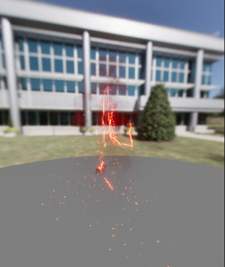
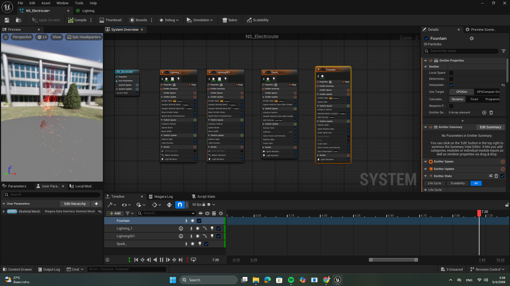
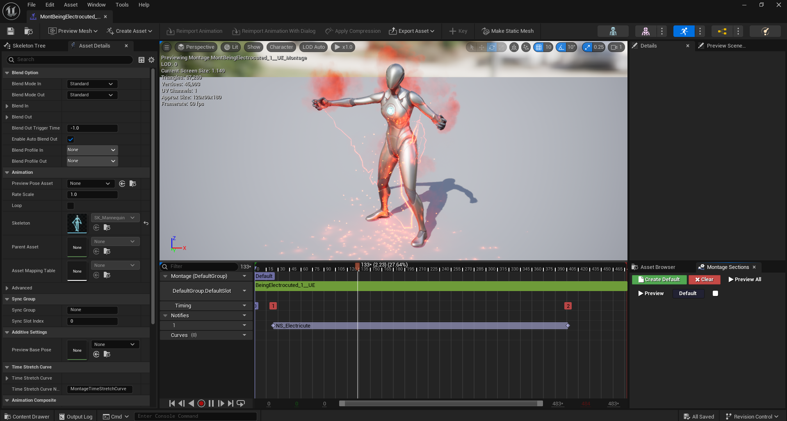

VFX Details
สร้างเอฟเฟกต์กระแสไฟฟ้าด้วย Niagara System โดยแบ่ง Layer การทำงานออกเป็นหลาย Emitter เช่น สายฟ้าหลัก Lightning Beams สะเก็ดไฟ Sparks และละอองพลังงาน เพื่อสร้างมิติและความซับซ้อนให้เอฟเฟกต์ดูสมจริงยิ่งขึ้น

ผสานการทำงานของ VFX เข้ากับแอนิเมชันตัวละครผ่าน Animation Montage โดยใช้ Anim Notifies เพื่อควบคุมจังหวะการเปิด-ปิด ของเอฟเฟกต์ให้สัมพันธ์กับท่าทางที่ถูกไฟช็อตได้อย่างสมบูรณ์แบบ

ประยุกต์ใช้ Skeletal Mesh Data Interface เพื่อให้สายฟ้าและเอฟเฟกต์ต่างๆ วิ่งไปตามพื้นผิว หรือกระดูก ของตัวละครได้อย่างแม่นยำ ทำให้เอฟเฟกต์ตอบสนองต่อรูปร่างและการเคลื่อนไหวของตัวละครแบบไดนามิก
